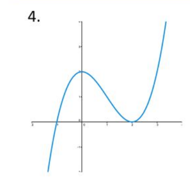

Differentiable functions.
This is a slideshow with audio.
CLICK to continue
Idea: differentiable is nearly affine.
\(f(x) : x \mapsto f(x)\)
Graph of the function
Graph of the function

graph of f
Graph of the function
graph of f